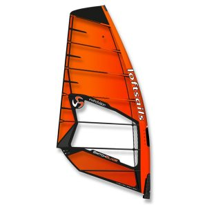

Equipos principales
Tablas
Compuesta principalmente por espuma de poliestireno recubierta de una estructura de distitas fibras (vidio, carbono, etc.) y resina epoxidica. Su longitud (slora), forma y ancho (manga) varia según la especialidad deportiva buscada, rango de viento y peso del navegante. Su misión es conseguir el mejor deslizamiento posible sobre el agua y sobre ella va subido el navegante.
Vela
Impulsa a la tabla (y con ello al navegante) por la diferencia de presión existente entre ambos lados de la misma debido a la diferente velocidad con la que el viento circula por ambas caras. Existen varios tamaños y formas que se adaptan según la necesidad de potencia y el tipo de tabla que utilizamos.
Mastil
El objetivo es unir la vela a la tabla y mantener un perfil adecuado de la vela para que gane potencia al navegar. Para facilitar el traslado y el montaje vienen en dos piezas que son unidas.
Quilla
Aleta o alerón, va montado en la tabla del lado de la popa. El objetivo es que evita la deriva en navegación de planeo.
Pie de mastil
Compuesto por una junta de tipo cardan con la finalidad de poder girarse en todas las direcciones. Su misión es unir el aparejo a la tabla y transmitir a está la fuerza generada por el viento en la vela.
Extensores
Van montados en el Mastil, la misión es poder adaptar el largo del mastil para que encaje con la forma adecuada de la vela.
Accesorios
Demás accesorios que son necesarios para la navegación como la driza,orza, arnes, cinchas de sujeción, indumentaria, etc.